Entrega final del proyecto de la asignatura Imágenes Médicas. Pontificia Universidad Javeriana, Facultad de Ingeniería, Departamento de Ingeniería de Sistemas.
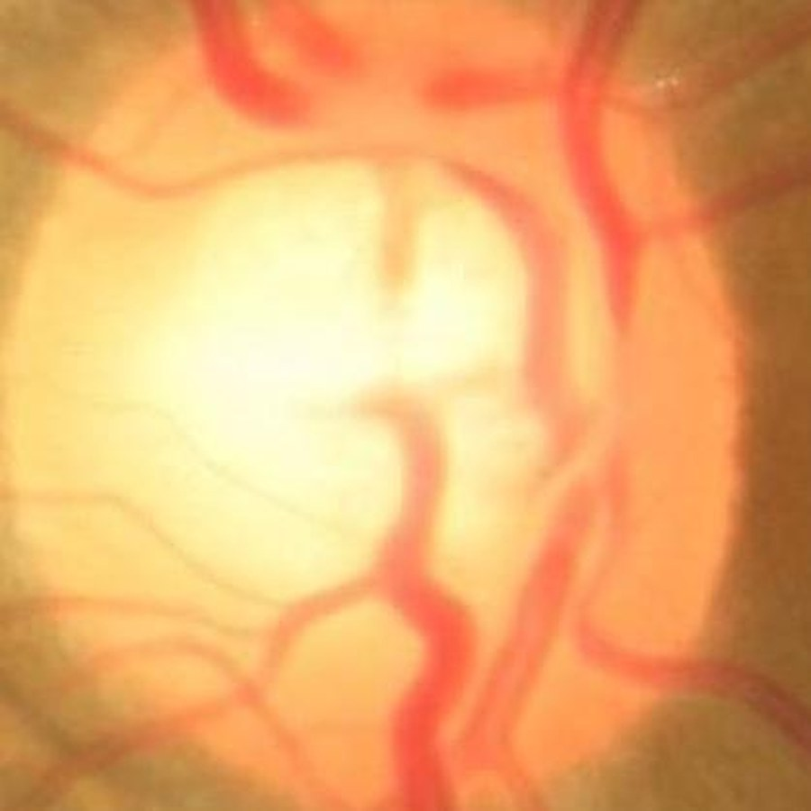
2.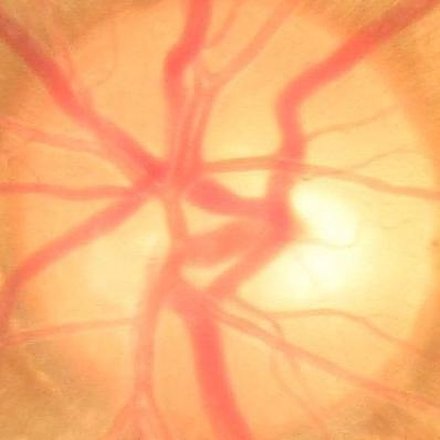
3.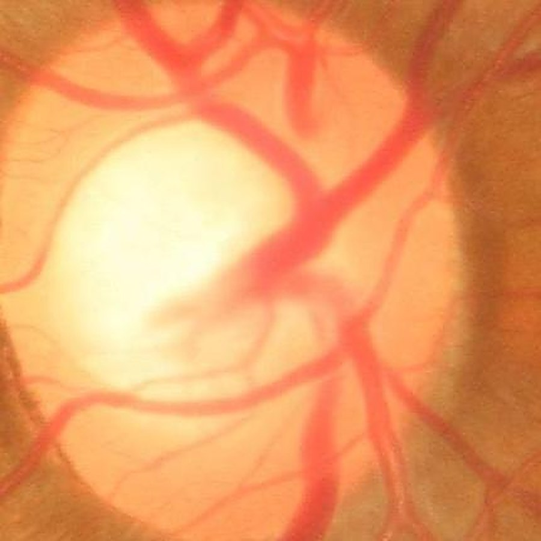
4.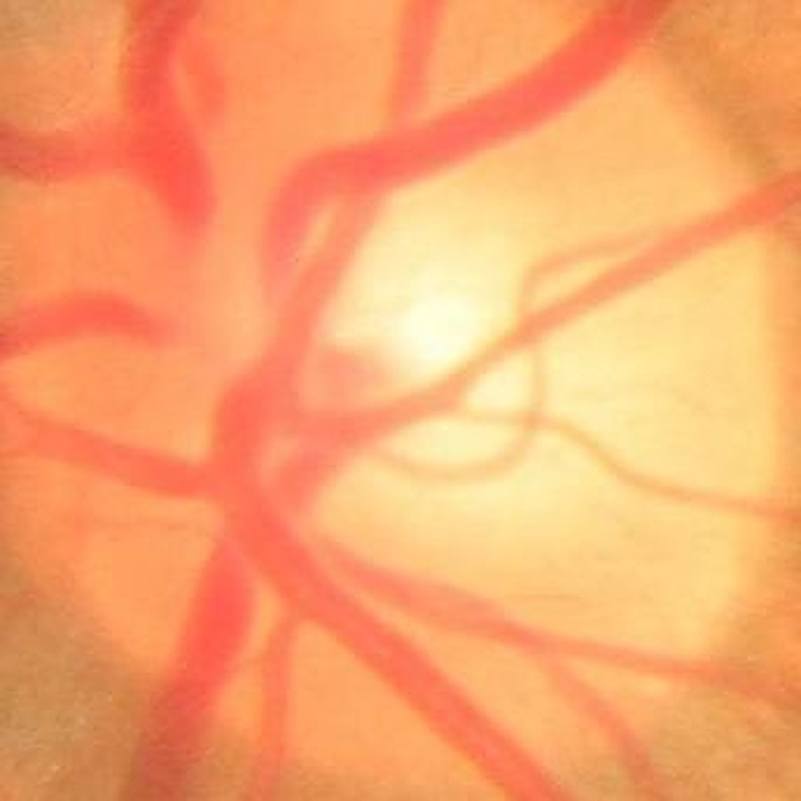
5.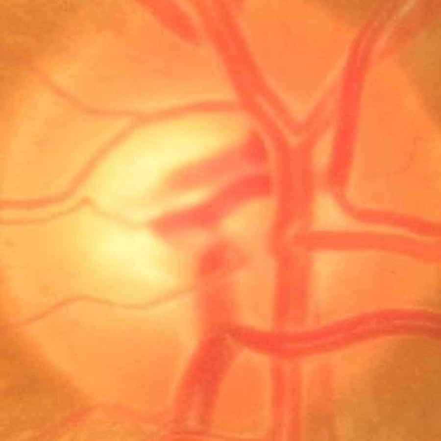
6.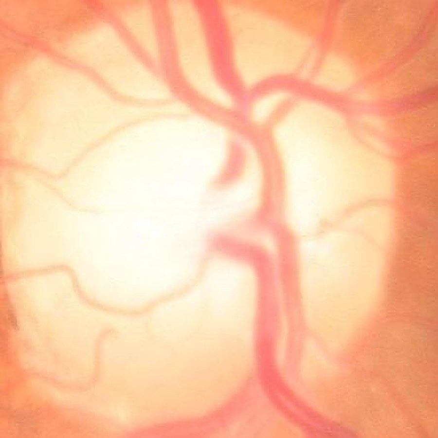
7.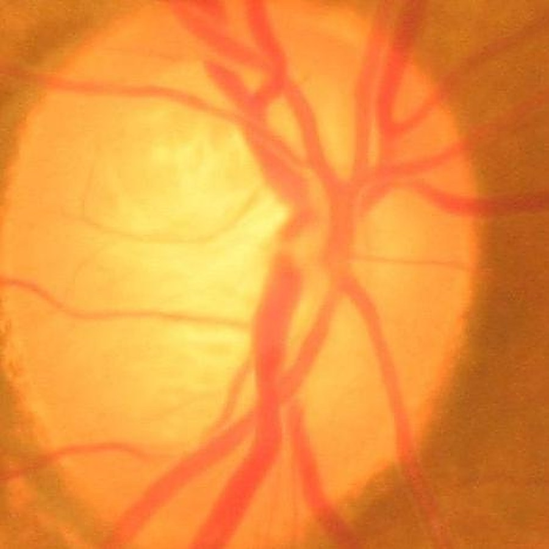
Copa pequeña. Etiqueta de referencia: sano (test/262).
Copa amplia. Etiqueta de referencia: glaucoma (test/366).
El glaucoma daña el nervio óptico y la visión perdida no se recupera. Una señal es la copa pálida que crece dentro del disco.
Las señales son ilustrativas, del equipo: esta copia no trae contornos clínicos.
650 imágenes de ORIGA-light (copia de Kaggle, licencia MIT): 168 con glaucoma y 482 sanas.
Son a lo sumo 641 ojos, porque 9 pares repiten el mismo. El número de personas no es verificable: no hay ID de paciente y el SERI no respondió.
Rojo, glaucoma; oliva, sano. Validación: 20 % estratificado de train, semilla 42. De las 196 de prueba se excluyeron 4.
Los códigos no se cruzan y no hay duplicados MD5. Con pHash y revisión a ojo hallamos 9 pares del mismo ojo, 5 entre particiones.
Límite: sin ID de paciente, no podemos verificar que una persona no esté en dos particiones.
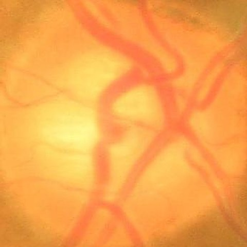
train/026
entrenamiento
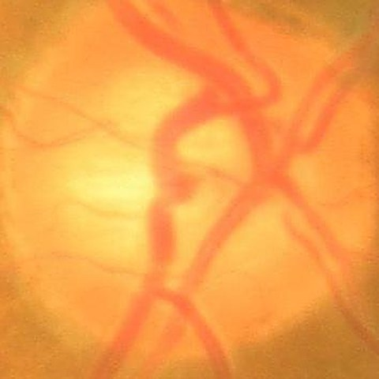
train/027
validación
d = 12
2.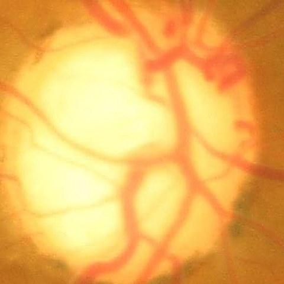
train/159
entrenamiento
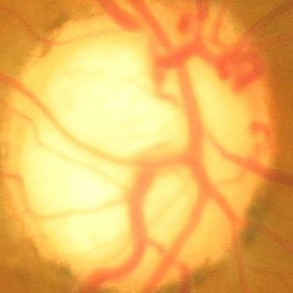
test/158
prueba
d = 4
3.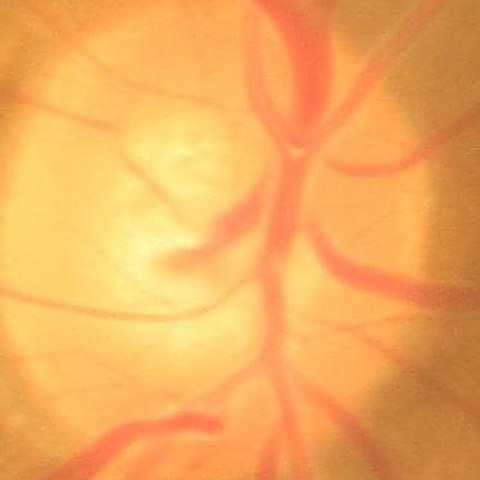
train/169
entrenamiento
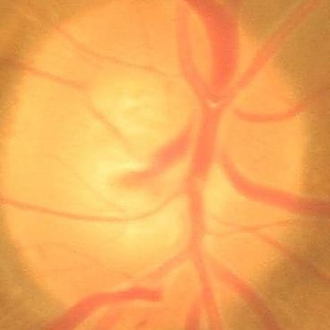
test/170
prueba
d = 10
4.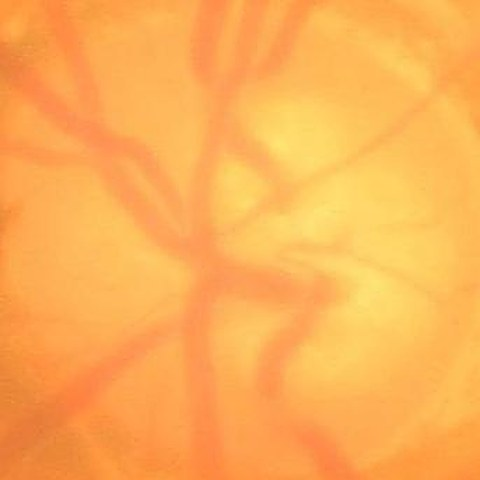
train/180
entrenamiento
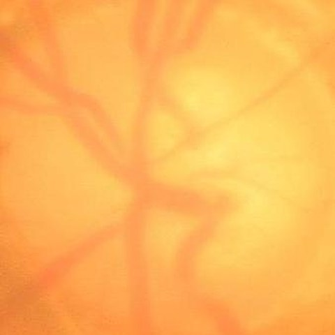
test/181
prueba
d = 2
5.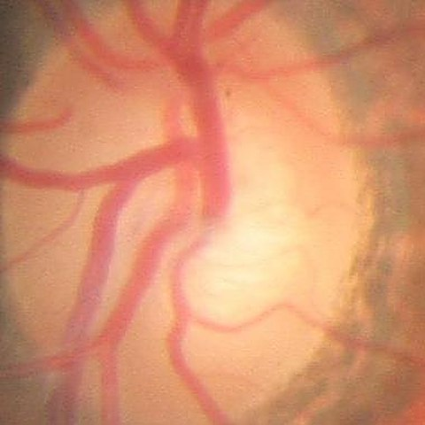
train/314
entrenamiento
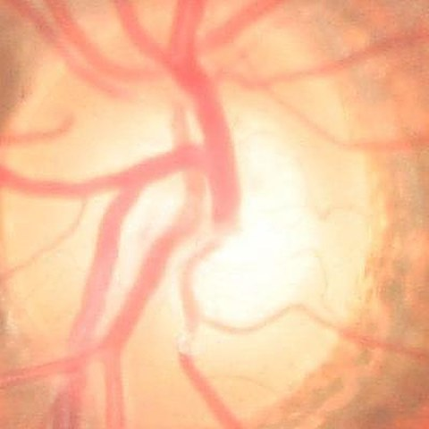
test/313
prueba
d = 8
Dos tomas del mismo ojo le darían al modelo una respuesta que ya vio. Las cuatro de prueba (2 a 5) quedaron fuera de la evaluación.
d: distancia pHash entre las dos tomas. El par 1 se mantuvo en validación y su efecto se midió.
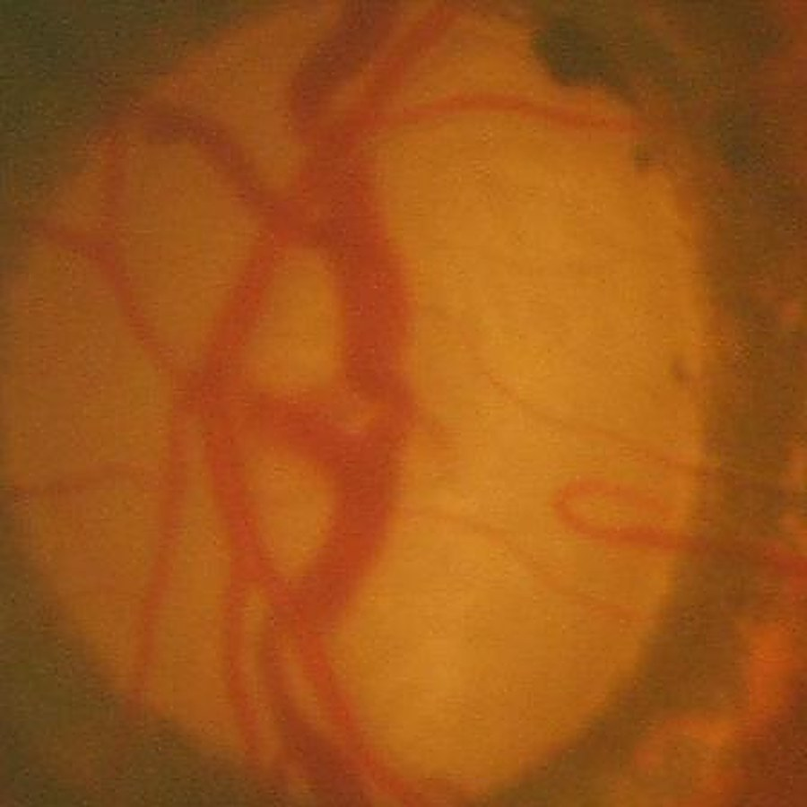
train/233, validación.
Etiqueta de referencia: glaucoma
Base: 8 medidas de color
256 px. Media y desviación de R, G y B en el disco, y palidez centro/anillo (0,996 y 1,043)
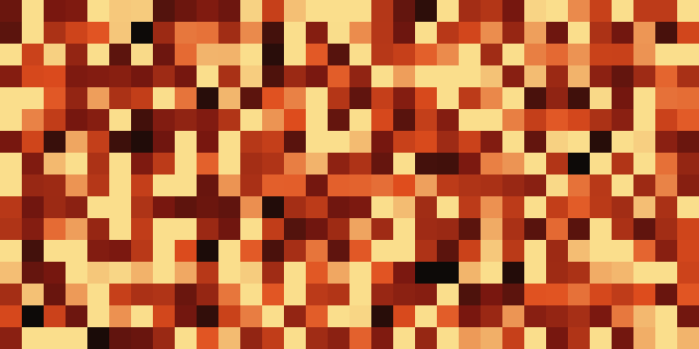
V2: 512 rasgos
de ResNet-18 preentrenada en ImageNet, 224 px
0,004
sano: no avisa
0,566
glaucoma: avisa
Ambas con regresión logística
La base respondía al brillo de la foto. Con pocos datos, partir de ImageNet ayuda (Christopher et al., 2018).
Regla escrita antes de comparar: gana el mayor AUC en validación; con menos de 0,01 de diferencia, la versión más simple. El umbral se congela y la prueba se abre una vez.
Punto lleno: validación (n = 91; 23 con glaucoma). Círculo vacío: entrenamiento. Sens. y Esp. con umbral 0,5.
V1 y V3 memorizan: llegan a 1,00 en entrenamiento. V3 y V2 empatan (0,006), así que gana V2, más simple. Su ventaja sobre la base es de +0,16 (IC 95 %: 0,04 a 0,31).
1 − especificidad
sensibilidad
Con las mismas falsas alarmas que la base, V2 encuentra 21 de 23 glaucomas. La base encuentra 16.
El punto rojo fija el umbral de V2: 0,4834 (especificidad 43/68), congelado antes de la prueba.
Prueba, n = 192. V2 con umbral 0,4834. En cada grupo, de mayor a menor puntuación.
Un médico que empiece por las 108 retinas con aviso revisa el 56 % de las fotos y encuentra el 82 % de los glaucomas. El costo son 68 falsas alarmas y 9 casos sin aviso.
Empeoró frente a validación: el AUC bajó de 0,83 a 0,75 y la especificidad, de 0,63 a 0,52. Las puntuaciones están entre 0,39 y 0,61, así que el umbral es frágil. La base no se evaluó en prueba.
Por eso la herramienta avisa y el médico decide. Con el mapa al lado, puede ver en qué se apoyó el modelo y descartar una respuesta mal apoyada. Ningún paciente recibiría un resultado sin la revisión de un especialista.
$ python predecir.py test/580.jpg test/366.jpg umbral 0.4834 test/580: puntuación 0.4200 -> sano | ref.: glaucoma test/366: puntuación 0.5793 -> glaucoma | ref.: glaucoma
Salida guardada (abreviada) de la inferencia con los pesos congelados.
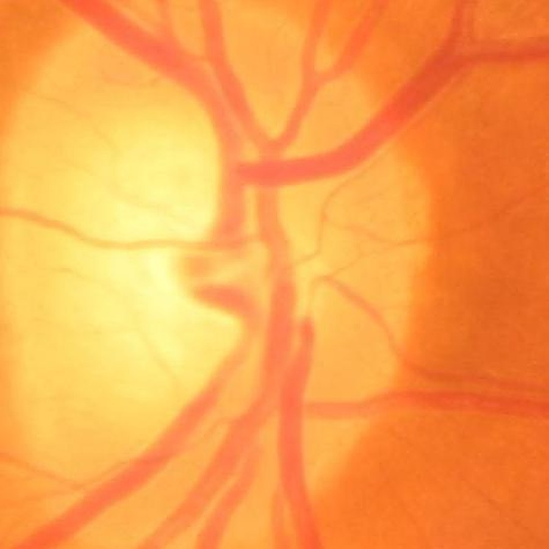
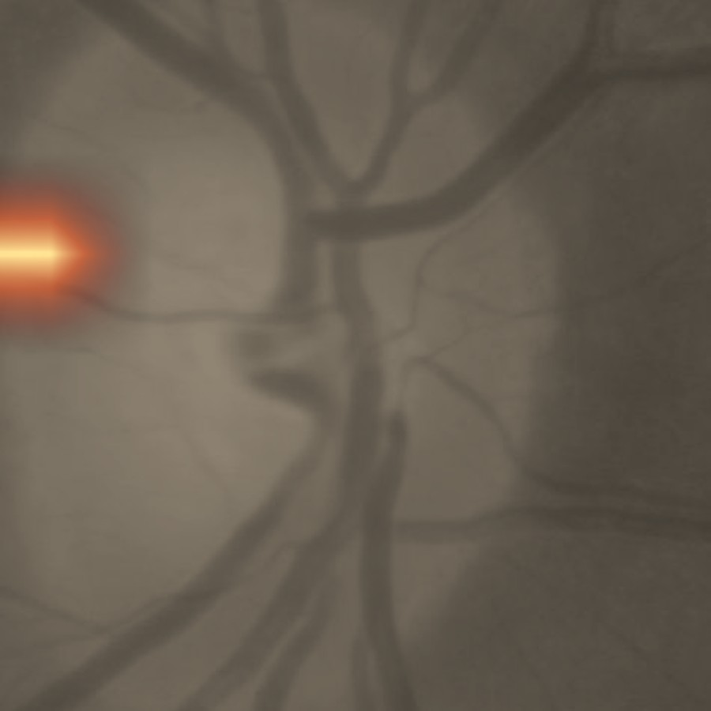
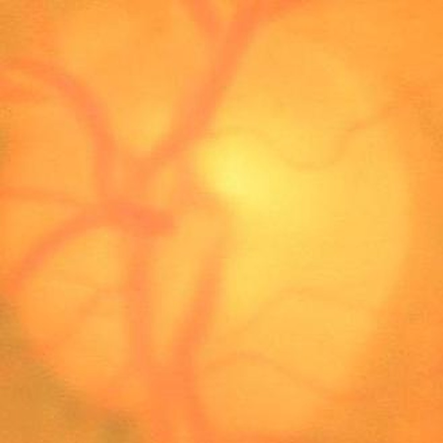
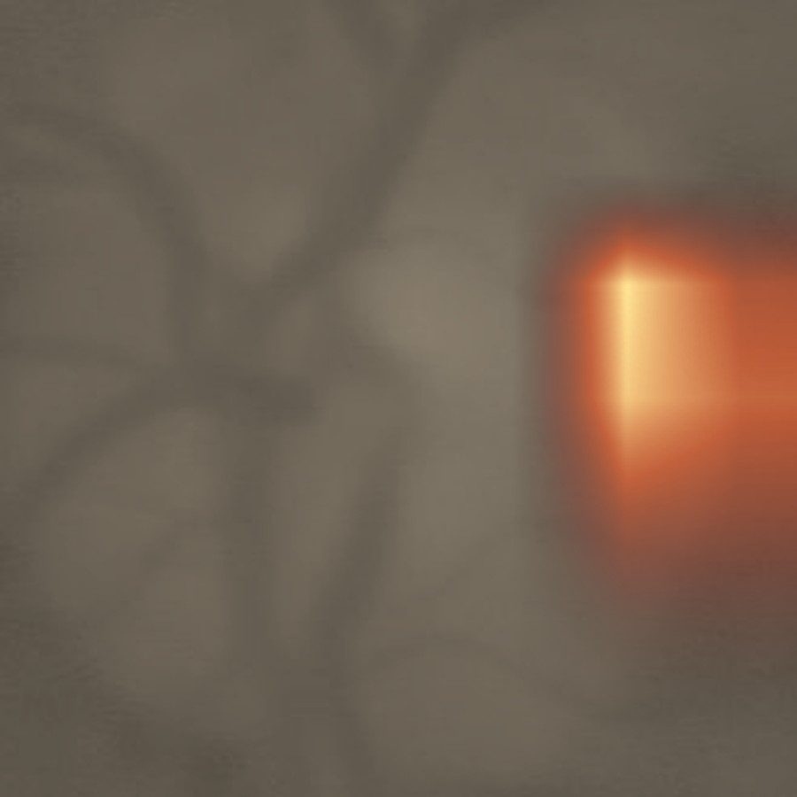
Lo que ve el médico
Dónde se apoyó (Grad-CAM)
Lo que ya hace. Separa mejor que el azar en 192 retinas que no se usaron para ajustar (AUC 0,751). Los rasgos de ResNet-18 sumaron 0,16 de AUC sobre el color en validación, y sin regularizar el modelo memoriza.
Lo que no podemos afirmar. Que sirva en la clínica o con otras cámaras y poblaciones. Que use la copa óptica. Que V2 supere a V3, ni a la base en prueba, donde la base no se evaluó.